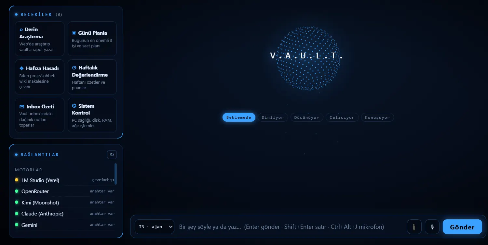

Electrical and Electronics Engineering, İstanbul Aydın University, 2022
Engineering, audit and software.
I am an Electrical and Electronics Engineer. I build tools end to end: multi-agent coordination, tool-using agents, MCP integrations, FastAPI and React. I graduated in Electrical and Electronics Engineering from İstanbul Aydın University in 2022.
I have built agents on cloud and local models, a framework that coordinates more than 38 agents, persistent memory on ChromaDB, and FastAPI/WebSocket backends. I like working independently on proof-of-concept work where requirements change quickly.
I also have four years of IT audit: ITGC audits for more than 10 banks and financial institutions at KPMG Türkiye, BDDK audits and Python automation at AlternatifBank, and IT audit and GRC in the crypto asset sector at Crybo and Yapı Kredi Kripto. That work taught me structured problem analysis and clear written reporting.
In short
IT audit
4 years
Software development
2 years
AI development and integration
2 years
Banks and financial institutions audited for ITGC
10+
Agents in the coordination framework
38+
Professional certificates
45+
From audit to AI.
·
IT Audit Specialist
Infonal Bilgi Teknolojileri A.Ş., assignment at Yapı Kredi Kripto
IT audit and GRC for a crypto asset service provider under the information systems requirements of the Capital Markets Board of Türkiye (SPK).
·
IT Audit Specialist
Crybo Kripto Varlık Alım Satım Platformu A.Ş.
IT internal audit and internal control for crypto asset operations.
·
Assistant Manager, IT Control and Data Analytics
AlternatifBank
Periodic IT system and process audits under BDDK requirements.
·
IT Audit, Experienced Assistant (from 09/2023)
KPMG Türkiye
ITGC audits for more than 10 banks and financial institutions.
Internships
Software Technologies Intern
Ribon Software Technologies
Design Engineering Office Intern
Tersan Shipyard
Intern
AnelGroup, AnelSis Ltd.
Apps, agents and tools I wrote myself.
Most of them run on my own PC every day. Public ones link to GitHub; private repositories are marked.
Ağaç Boyutu
Desktop
Ağaç Boyutu
Approach A squarified treemap sits next to the size-bar tree; deleting only goes to the Recycle Bin and system roots are protected.
A disk space analyser for Windows. It shows folders in a tree with size bars and in a treemap, with file type and top 100 file views and CSV or HTML export. Deleting always asks first, and system folders are protected.
Approach Fences only keep references: desktop files are never moved, deleted or renamed, and icons return to their place when the app closes.
A desktop organiser that groups icons into translucent fences. Rules drop new files into the right fence, and it has folder portals, pages, layout snapshots and per-monitor layouts. Files never move; fences only hold references.
Why Explorer was slow when moving big folders to an external drive, and it never said why it stalled.
Adds copy and paste with Robocopy to the right-click menu. Robocopy does the copying, while a window that looks like Windows’ own shows a speed graph and the time left. It never deletes anything.
C#, WPF, Robocopy
Private repo
Hızlı İndir
Desktop
Hızlı İndir
Approach Each connection writes its part straight into one file, so there is no merge wait at the end. When a part finishes, the largest remaining part is split in two.
A multi-connection download manager. It splits files into parts and downloads them in parallel, and a Chrome and Edge extension hands over browser downloads and videos. Written from scratch.
C#, WPF, .NET 8
Private repo
V.A.U.L.T. // B.R.E.A.C.H.

Agents and AI
V.A.U.L.T. // B.R.E.A.C.H.
An agent workspace that runs on cloud LLM APIs or a local LM Studio model, with memory, web, file and command tools. Risky actions need approval. It can hand tasks to Claude, Gemini and Codex CLI.
A macOS-style dock for Windows 11. Icons grow on hover, windows shrink into the dock with a Genie effect, and a menu bar plus sound and system panels sit around it.
A single-file desktop assistant for Windows. It chats, reads and writes files, searches the web and runs PowerShell, asking before it writes a file or runs a command. The API key is encrypted with Windows DPAPI.
A game launcher that looks like the PS5 home screen (unofficial). It gathers games, emulators and shortcuts with large covers on one screen, works with a controller or keyboard, and keeps play time.
Removes a TV in standby from the Windows display layout with one click and puts it back in the same place, recognising the TV by EDID rather than display number.
Brings Claude Code session summaries and the assistants’ nightly notes together in a shared Drive folder, so each session starts where the last one stopped.
JavaScript, Claude Code hooks
Private repo
Multi-agent coordination framework
Agents and AI
Parallel task execution, shared memory and multi-step automation across more than 38 specialised agents.
Claude Code CLI, MCP, Node.js, Bash hooks
No link
MemPalace: persistent memory
Agents and AI
Persistent memory for agents. Notes are embedded with MiniLM and Gemma, stored in ChromaDB and searched over an HNSW index; agents pull context over MCP.
ChromaDB, MCP
No link
NanoBanana Draw to Edit
Agents and AI
An AI image editor: brush over part of an image and describe the change in a sentence.
A simple PWA that teaches you to recognise notes by ear. Big buttons, no time pressure; new notes unlock as you answer correctly, and it works offline after the first visit.
Writing, Speaking and grammar practice for IELTS General Training. A language model scores answers against the official criteria, and progress syncs across devices.
JavaScript, Netlify Functions, LLM API
Private repo
Song lyrics PWA
Web and PWA
A phone-first PWA for Turkish song lyrics. Data stays in the browser’s IndexedDB, and lyrics left empty are fetched on the server side.
HTML, CSS, JavaScript, Netlify Functions
Private repo
Spectator
Web and PWA
Interactive interface demos for camera-free care monitoring: an elderly person, a person with limited mobility and a pet. All data is simulated.
An interface that scores IT audit and security postings against a profile by skills, title, location and seniority. It runs on sample postings for now.
Tracking and cleaning bots for vending machine operations, plus contributions to a field tracking app with roles, photo upload and CSV reports (two-person project).
A shadPS4 build tuned for inFAMOUS First Light. I ported 1:1 mouse aiming from Second Son to First Light’s camera code, and in-game button icons switch to keyboard and mouse keys. No game files included.
A one-click shadPS4 launcher for Second Son with ready settings, a present mode that fixes the FPS issue and keyboard and mouse bindings. No game or firmware files.
Small Scrap Mechanic Survival mods: flight (FlyNoclip), a brake light relay (BrakeLight) and see-through rain (ClearRain). No game files in the repository.
Merges table screenshots into one Excel file with OCR. Where it is unsure or images disagree, it leaves the cell empty instead of guessing.
Python, Tesseract OCR, Excel
Private repo
Lively restore script
Small tools
Fixes Lively Wallpaper losing one screen’s wallpaper when the display layout changes, by rewriting its layout file from each screen’s hardware ID.
PowerShell
Private repo
Kuti Dock Gemini extension
Small tools
A Chrome extension that reads the visible text of Gemini’s usage and weekly limit cards and sends it only to Kuti Dock on the same PC. It never reads cookies or session data.
JavaScript, Chrome Extension
Private repo
Nook notch tiles
Small tools
Adds tiles to the Nook notch panel for voice chats with assistants, the game library and Meet.
PowerShell
Private repo
ESP32 camera vehicle
Hardware
Graduation project. Real-time video streaming over WebSocket and PWM motor control.
ESP32, WebSocket, PWM, IoT
No link
Power electronics lab projects
Hardware
SPWM inverter, three-phase rectifier, IGBT driver and PWM control work.
SPWM, IGBT, PWM, MATLAB Simulink
No link
Tools I use in projects and at work.
Programming
Python
JavaScript / TypeScript
SQL
C++
LLMs and agents
OpenAI, Gemini, Claude APIs
LM Studio
Multi-agent
MCP
Memory and retrieval
ChromaDB
MiniLM and Gemma embeddings
Semantic search
HNSW
Backend and web
FastAPI
Node.js / Express
REST and WebSocket
React
Tools
n8n
Docker
Git / GitHub
Selenium
Claude Code, Gemini CLI, Codex CLI
Audit and compliance
ITGC
ISO 27001, COBIT, NIST
Nessus, Burp Suite
AWS / Azure
BDDK and SPK
Electronics
ESP32
SPWM, PWM
MATLAB Simulink
Oscilloscope
Certificates
More than 45 professional certificates, among them:
IT Audit Fundamentals & Advanced ConceptsKPMG
Global Quality & Risk ManagementKPMG
Automated Controls & ITGCsAutomated controls
ISO 27001 & GDPR ComplianceCompliance
COBIT & NIST FrameworksIT governance
Cloud Security (AWS, Azure)Cloud security
Cybersecurity & Penetration TestingSecurity
Cambridge English: First (FCE)English
Languages
Turkish
Native
English
C2
French
A2
Two separate AI juries.
I did not score this site. The final version went to two separate models; both scored each criterion out of 10 with a reason, using the public Awwwards jury criteria. Any criterion under 8 was fixed and judged again. Not affiliated with Awwwards; the scores are estimates.
DeepSeek
Text model. Read the HTML, CSS and measurements (LCP, CLS, accessibility, overflow).
deepseek/deepseek-v4.1-flash-abliterated
7.4Overall
Design7.0
The composition is deliberate: varied card spans, a masked portrait bleeding into black, a real facts strip, and window chrome that ties cards to the subject. But the display type tops out at 64px in a system-font stack (Segoe UI Variable), so the hero reads as a well-built template rather than a poster.
Usability8.0
Every primary target answers in the site’s own motion, orientation is instant via the persistent side nav and current-section label, and nothing blocks. The skip link exists but is labelled in Turkish, which the tool’s English regex misses.
Creativity7.0
One idea specific to the subject, the desktop-app window chrome and status bar, is carried through the project grid and footer. It is a good, coherent conceit, but it is a skin on a conventional portfolio grid, not a new interaction.
Content8.0
Copy has voice and substance: each flagship card states the problem and the design decision, private repos are labelled instead of hidden, and the CV data is verifiable. Some rows (V.A.U.L.T., Kuti Dock) drop the rationale and fall back to plain description.
Previous design: 7.3 · 4 rounds
Gemini
Vision model. Looked at desktop, phone and reduced motion screenshots.
gemini-3.1-pro-preview
7.4Overall
Design7.0
The design features a clear typographic system and an intentional dark palette with red accents. It is highly consistent and professional, though it relies on standard layout patterns rather than highly memorable, unique compositions.
Usability8.0
Navigation is instantly clear via the sidebar, and the mobile layout is well-adapted. The site runs at a smooth 60 FPS, and all primary hover targets respond with physical motion (transforms) rather than just color changes.
Creativity7.0
While the overall layout uses known patterns, the inclusion of an ’AI Jury’ section that evaluates the site itself is a clever, subject-specific idea that adds a unique touch.
Content8.0
The copy is specific and has a clear voice. Project cards detail the ’Approach’ and ’Reasoning’ behind the tools, providing real substance rather than generic descriptions.